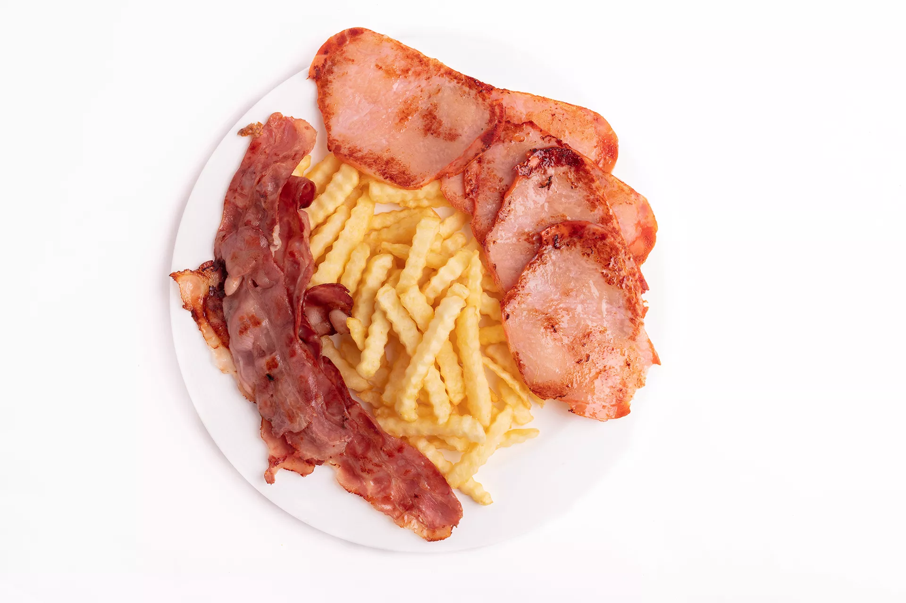
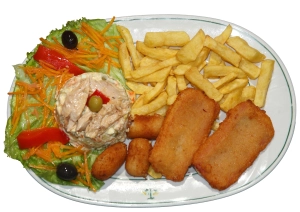
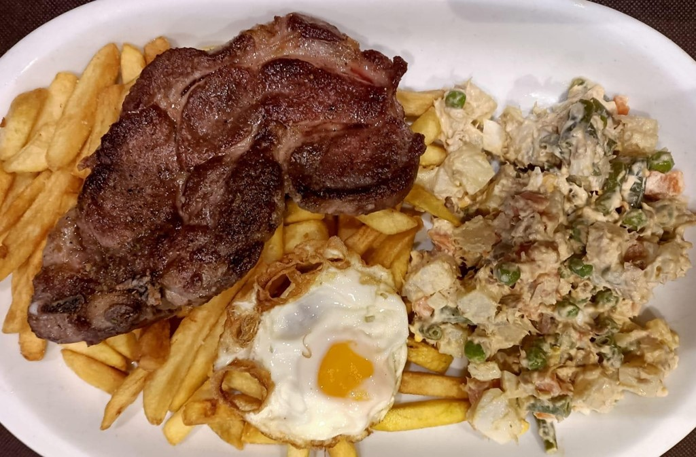

COMIDA RÁPIDA
Hamburguesa

Tiempo de preparación: 5 minutos
Precio: 4,50€
Ingredientes: 500g de carne molida (preferiblemente una mezcla de carne de res y cerdo), 4 panes para hamburguesa, 4 hojas de lechuga, 2 tomates, cortados en rodajas, 1 cebolla roja grande, cortada en rodajas finas, 4 lonchas de queso cheddar (o el queso de su elección), mostaza, ketchup, sal y pimienta al gusto, aceite de oliva.
Preparación: Preparación de la carne: En un tazón grande, se mezcla la carne molida con sal y pimienta al gusto. Se forman cuatro hamburguesas del mismo tamaño y grosor, asegurándose de que estén compactas para evitar que se deshagan al cocinarlas. Cocción de las hamburguesas: Se calienta un poco de aceite de oliva en una sartén grande a fuego medio-alto. Una vez que el aceite esté caliente, se colocan las hamburguesas en la sartén y se cocinan durante unos 4-5 minutos por cada lado, o hasta que estén doradas por fuera y cocidas por dentro. También se pueden cocinar a la parrilla si se prefiere. Montaje de la hamburguesa: Se abren los panes para hamburguesa y se tuéstalos ligeramente si se desea. Se unta un poco de mostaza y ketchup en la parte inferior de cada pan. Se coloca una hoja de lechuga sobre el ketchup y mostaza. Se añade una rodaja de tomate sobre la lechuga. Sobre el tomate, se coloca una hamburguesa cocida. Se agregan unas rodajas de cebolla roja sobre la hamburguesa. Se coloca una loncha de queso sobre las cebollas. Finalmente, se coloca la parte superior del pan sobre el queso para cerrar la hamburguesa.
Surtido de tacos

Tiempo de preparación: 15 minutos
Precio: 7,60€
Ingredientes: 500g de carne de res (bistec, falda, o la preferida), 500g de pechuga de pollo, 500g de camarones grandes, pelados y desvenados, 1 paquete de tortillas de maíz, 1 cebolla blanca, 1 manojo de cilantro fresco, 3 tomates medianos, 2 aguacates maduros, 2 limones, 1 cabeza de ajo, aceite de oliva, sal y pimienta al gusto, salsa picante (opcional).
Preparación: Preparación de la carne de res: Cortar la carne de res en tiras delgadas. Picar finamente la cebolla y el cilantro. En una sartén grande, calentar un poco de aceite de oliva a fuego medio-alto. Agregar la carne de res y cocinar hasta que esté dorada. Sazonar con sal y pimienta al gusto. Agregar la cebolla y el cilantro picados y cocinar por unos minutos más hasta que la cebolla esté tierna. Preparación de la pechuga de pollo: Cortar la pechuga de pollo en tiras delgadas. Picar finamente un diente de ajo. En una sartén grande, calentar un poco de aceite de oliva a fuego medio-alto. Agregar el ajo picado y cocinar hasta que esté fragante. Agregar las tiras de pollo y cocinar hasta que estén cocidas por completo. Exprimir el jugo de medio limón sobre el pollo y sazonar con sal y pimienta al gusto. Preparación de los camarones: Enjuagar los camarones y secarlos con papel de cocina. Picar finamente dos dientes de ajo y cortar los tomates en cubitos pequeños. En una sartén grande, calentar un poco de aceite de oliva a fuego medio-alto. Agregar los camarones y cocinar hasta que estén rosados y cocidos. Agregar el ajo picado y cocinar por un minuto más. Agregar los tomates picados y cocinar hasta que estén tiernos. Exprimir el jugo de medio limón sobre los camarones y sazonar con sal y pimienta al gusto. Reservar. Preparación de los acompañamientos: Pelar y cortar los aguacates en rebanadas delgadas. Cortar el limón restante en gajos. Calentar las tortillas de maíz en una sartén caliente durante unos segundos por cada lado. Montaje de los tacos: Para cada taco, tomar una tortilla caliente y colocar una porción de carne de res, pollo o camarones en el centro. Agregar unas rebanadas de aguacate y exprimir un poco de jugo de limón por encima. Opcionalmente, añadir salsa picante al gusto. Finalemte, doblar la tortilla por la mitad para formar el taco.
Perritos calientes

Tiempo de preparación: 7 minutos
Precio: 5,70€
Ingredientes: 3 salchichas (pueden ser de cerdo, res, pollo o vegetarianas), 3 panes para perritos calientes, 1 cebolla blanca, 1 pimiento rojo, 1 pimiento verde, 1 zanahoria, 1 taza de col rallada, mostaza, ketchup, salsa picante (opcional), aceite vegetal, sal y pimienta al gusto.
Preparación: Preparación de las verduras: Picar finamente la cebolla, los pimientos y la zanahoria. En una sartén grande, calentar un poco de aceite vegetal a fuego medio-alto. Agregar las verduras picadas y cocinar hasta que estén tiernas. Sazonar con sal y pimienta al gusto. Retirar del fuego y reservar. Cocción de las salchichas: En una sartén grande o parrilla, calentar un poco de aceite vegetal a fuego medio-alto. Agregar las salchichas y cocinar hasta que estén doradas por todos lados y cocidas por dentro. Esto generalmente toma unos 8-10 minutos. Retirar del fuego y reservar. Preparación de los panes: Abrir los panes para perritos calientes por la mitad, sin llegar a separar completamente las dos partes. Tostar ligeramente los panes en una sartén caliente o en una parrilla.
PLATOS COMBINADOS
Número 1

Tiempo de preparación: 15 minutos
Precio: 9€
Ingredientes: ensaladilla rusa, aceitunas, patatas fritas, pechuga de pollo a la plancha, ensalda con bonito, lechuga, tomate y cebolla.
Preparación: Preparación de la pechuga de pollo a la plancha: Condimentar las pechugas de pollo con sal y pimienta al gusto. Calentar una sartén a fuego medio-alto y agregar un poco de aceite de oliva. Cocinar las pechugas de pollo en la sartén caliente, aproximadamente 5-6 minutos por cada lado o hasta que estén cocidas y doradas por fuera. El tiempo de cocción puede variar según el grosor de las pechugas. Retirar las pechugas de pollo de la sartén y dejar reposar unos minutos antes de cortarlas en tiras o trozos. Preparación de la ensalada con bonito: Lavar y cortar la lechuga en trozos pequeños. Cortar el tomate y la cebolla en rodajas finas. En un bol grande, combinar la lechuga, el tomate y la cebolla. Agregar el bonito en conserva escurrido sobre la ensalada. Aderezar la ensalada con un chorrito de aceite de oliva y vinagre al gusto. Mezclar bien para combinar todos los ingredientes.
Número 2
Tiempo de preparación: 15 minutos
Precio: 8,50€
Ingredientes: filetes adobados (pueden ser de cerdo, ternera, pollo o tofu para una opción vegetariana), patatas, beicon (tocino), sal, pimienta, aceite de oliva, hierbas aromáticas (opcional).
Preparación: Preparación de los filetes adobados a la plancha: Condimentar los filetes adobados con sal y pimienta al gusto. Calentar una plancha o una sartén grande a fuego medio-alto y agregar un poco de aceite de oliva. Colocar los filetes adobados en la plancha caliente y cocinarlos durante unos 5-6 minutos por cada lado, o hasta que estén dorados por fuera y cocidos por dentro. El tiempo de cocción puede variar según el grosor de los filetes. Si se desea, espolvorear algunas hierbas aromáticas como tomillo o romero sobre los filetes durante la cocción para darles un sabor adicional. Preparación de las patatas fritas: Pelar las patatas y cortarlas en tiras delgadas para hacer las patatas fritas. Calentar una sartén grande con abundante aceite de oliva a fuego medio-alto. Cuando el aceite esté caliente, agregar las tiras de patatas y freírlas hasta que estén doradas y crujientes. Es importante removerlas ocasionalmente para que se cocinen de manera uniforme. Una vez que las patatas estén doradas, retirarlas del aceite con una espumadera y colocarlas sobre papel absorbente para eliminar el exceso de aceite. Sazonar con sal al gusto. Preparación de las tiras de beicon a la plancha: Calentar una sartén grande a fuego medio y agregar las tiras de beicon. Cocinar las tiras de beicon hasta que estén doradas y crujientes, aproximadamente 3-4 minutos por cada lado. Una vez cocidas, retirar las tiras de beicon de la sartén y colocarlas sobre papel absorbente para eliminar el exceso de grasa.
Número 3
Tiempo de preparación: 20 minutos
Precio: 12€
Ingredientes: patatas fritas, ensaladilla rusa con bonito y aceitunas, cocretas de jamón, filetes de pescado rebozado, ensalada con tomate, aceitunas negras, zanahoria rallada y vinagre.
Preparación: Preparación de las patatas fritas: Pelar las patatas y cortarlas en tiras para hacer las patatas fritas. Calentar una sartén grande con abundante aceite de oliva a fuego medio-alto. Freír las tiras de patatas en el aceite caliente hasta que estén doradas y crujientes. Retirar las patatas del aceite y colocarlas sobre papel absorbente para eliminar el exceso de aceite. Sazonar con sal al gusto. Preparación de la ensaladilla rusa con bonito y aceitunas: Si la ensaladilla rusa no está preparada, puedes hacerla mezclando patatas cocidas, zanahoria rallada, guisantes, bonito en conserva desmenuzado, mayonesa y aceitunas picadas. Reservar en el refrigerador hasta el momento de servir. Preparación de las croquetas de jamón: Si las croquetas no están preparadas, puedes hacerlas mezclando jamón serrano picado, harina, leche, mantequilla, nuez moscada, sal y pimienta. Formar las croquetas, pasarlas por huevo batido y luego por pan rallado. Freírlas en aceite caliente hasta que estén doradas por fuera y cocidas por dentro. Preparación de los filetes de pescado rebozado: Condimentar los filetes de pescado con sal y pimienta al gusto. Pasar los filetes por harina, luego por huevo batido y finalmente por pan rallado para empanizarlos. Freír los filetes empanizados en aceite caliente hasta que estén dorados y cocidos por dentro. Preparación de la ensalada con tomate, aceitunas negras, zanahoria rallada y vinagre: Cortar el tomate en rodajas y colocarlo sobre un lecho de lechuga en un plato. Agregar las aceitunas negras y la zanahoria rallada por encima de las rodajas de tomate. Aderezar la ensalada con un chorrito de vinagre al gusto.
Número 4
Tiempo de preparación: 30 minutos
Precio: 14,50€
Ingredientes: ensaladilla rusa, huevo frito, patatas fritas y filete de ternera a la sartén.
Preparación: Preparación de las patatas fritas: Pelar las patatas y cortarlas en tiras delgadas para hacer las patatas fritas. En una sartén grande, calentar una cantidad suficiente de aceite de oliva a fuego medio-alto. Cuando el aceite esté caliente, agregar las tiras de patatas y freírlas hasta que estén doradas y crujientes. Retirar las patatas del aceite con una espumadera y colocarlas sobre papel absorbente para eliminar el exceso de grasa. Sazonar con sal al gusto. Preparación del huevo frito: Calentar una sartén pequeña con un poco de aceite de oliva a fuego medio. Cuando el aceite esté caliente, cascar los huevos uno por uno y dejar que se frían en la sartén. Cocinar los huevos hasta que las claras estén firmes pero las yemas aún estén líquidas, o al punto de cocción deseado. Sazonar con sal y pimienta al gusto. Preparación del filete de ternera: Condimentar el filete de ternera con sal y pimienta al gusto por ambos lados. Calentar una sartén grande con un poco de aceite de oliva a fuego medio-alto. Cuando la sartén esté caliente, colocar el filete de ternera y cocinarlo durante unos 3-4 minutos por cada lado, o hasta que esté dorado por fuera y cocido al punto deseado por dentro. El tiempo de cocción puede variar según el grosor del filete y el nivel de cocción deseado. Una vez cocido, retirar el filete de la sartén y dejarlo reposar unos minutos antes de cortarlo en tiras o servirlo entero.
Número 5

Tiempo de preparación: 20 minutos
Precio: 11,50€
Ingredientes: calamares fritos, langostinos, queso en lonchas, jamón serrano, croquetas de beicon, pimientos verdes, mejillones rellenos de aguacate y zanahoria, pulpo, mayonesa (opcional) y limón (para hechar sobre el pulpo y los calamares).
Preparación: Preparación de los calamares fritos: Limpiar los calamares y cortarlos en anillas. En una sartén grande, calentar abundante aceite de oliva a fuego medio-alto. Cuando el aceite esté caliente, freír las anillas de calamar hasta que estén doradas y crujientes. Retirar y escurrir sobre papel absorbente. Preparación de los langostinos: Pelar los langostinos dejando la cola. En una sartén o parrilla caliente, cocinar los langostinos hasta que estén rosados y cocidos por completo. Preparación de los mejillones rellenos de aguacate y zanahoria: Cocinar los mejillones al vapor hasta que se abran. Retirar una de las valvas y reservar. Picar finamente aguacate y zanahoria, y mezclarlos con un poco de mayonesa si se desea. Rellenar las valvas de mejillón con la mezcla de aguacate y zanahoria. Preparación del pulpo: Cocinar el pulpo en agua hirviendo con sal durante unos 30-40 minutos o hasta que esté tierno. Cortar el pulpo en rodajas y servir.
POSTRES
Mousse de chocolate con frutas

Tiempo de preparación: 15 minutos
Precio: 3,50€
Ingredientes: láminas de chocolate (3), nata o crema, frambuesas, fresas y mango.
Preparación: Preparación de las láminas de chocolate: Derrite las láminas de chocolate en un recipiente resistente al calor sobre baño María o en intervalos cortos en el microondas. Remueve con frecuencia para evitar que se queme. Una vez derretido, deja enfriar el chocolate a temperatura ambiente hasta que esté apenas tibio. Preparación de la nata o crema: En un bol grande, bate la nata o crema para montar con una batidora eléctrica hasta que formen picos suaves. No batas en exceso para evitar que se convierta en mantequilla. Incorporación del chocolate a la nata: Agrega el chocolate derretido a la nata montada y mezcla suavemente con movimientos envolventes hasta que estén bien combinados. Asegúrate de que no queden grumos de chocolate. Montaje: Coloca una capa de mousse de chocolate en el fondo. Añade una capa de frutas frescas cortadas en trozos pequeños. Puedes intercalar las frambuesas, fresas y mango según tu preferencia. Continúa alternando capas de mousse de chocolate y frutas hasta llenar las copas o el recipiente.
Salteado de frutas

Tiempo de preparación: 12 minutos
Precio: 5,50€
Ingredientes: melocotón, fresas, ciruelas, uvas pasas, plátano, pepitas de chocolate, guayaba verde y crema batida.
Preparación: Preparación de las frutas: Lava todas las frutas bajo agua corriente. Pela y corta el melocotón en trozos pequeños. Retira las hojas y el corazón de las fresas, luego córtalas en rodajas. Corta las ciruelas en gajos, desecha el hueso. Corta el plátano en rodajas. Si las uvas pasas están secas, puedes hidratarlas en agua caliente durante unos minutos y luego escurrirlas. Corta la guayaba verde en cubos pequeños. Salteado de las frutas: Calienta una sartén grande a fuego medio. Agrega todas las frutas preparadas a la sartén caliente. Cocina las frutas revolviendo ocasionalmente durante unos 5-7 minutos, o hasta que estén ligeramente caramelizadas y suaves. A mitad de la cocción, agrega las pepitas de chocolate y mezcla bien para que se derritan ligeramente y se integren con las frutas. Servir: Retira la sartén del fuego y sirve el salteado de frutas caliente en platos individuales o en un tazón grande. Acompaña el salteado de frutas con una generosa porción de crema batida por encima. Si lo deseas, puedes espolvorear un poco más de pepitas de chocolate sobre la crema batida para decorar.
Pasteles de naranja

Tiempo de preparación: 15 minutos
Precio: 6€
Ingredientes: 2 naranjas grandes, 200g de azúcar, 200g de harina de trigo, 4 huevos, 100g de mantequilla, 1 cucharadita de levadura en polvo, azúcar glass (opcional, para decorar).
Preparación: Preparación de las naranjas: Lava bien las naranjas y sécalas con cuidado. Ralla la cáscara de las naranjas para obtener la ralladura y exprime el jugo. Reserva ambos por separado. Preparación de la masa: Precalienta el horno a 180°C (350°F). En un bol grande, bate los huevos con el azúcar hasta obtener una mezcla espumosa y blanquecina. Agrega la mantequilla derretida y mezcla bien. Incorpora la ralladura de naranja y el jugo de naranja, y sigue mezclando. Tamiza la harina y la levadura en polvo sobre la mezcla y revuelve hasta que esté homogénea. Horneado: Engrasa ligeramente los moldes para pasteles o utiliza moldes individuales para muffins. Vierte la masa en los moldes, llenándolos hasta 2/3 de su capacidad. Hornea en el horno precalentado durante aproximadamente 20-25 minutos, o hasta que los pasteles estén dorados y al insertar un palillo en el centro, este salga limpio. Una vez listos, retira los pasteles del horno y déjalos enfriar en los moldes durante unos minutos antes de transferirlos a una rejilla para que se enfríen completamente.